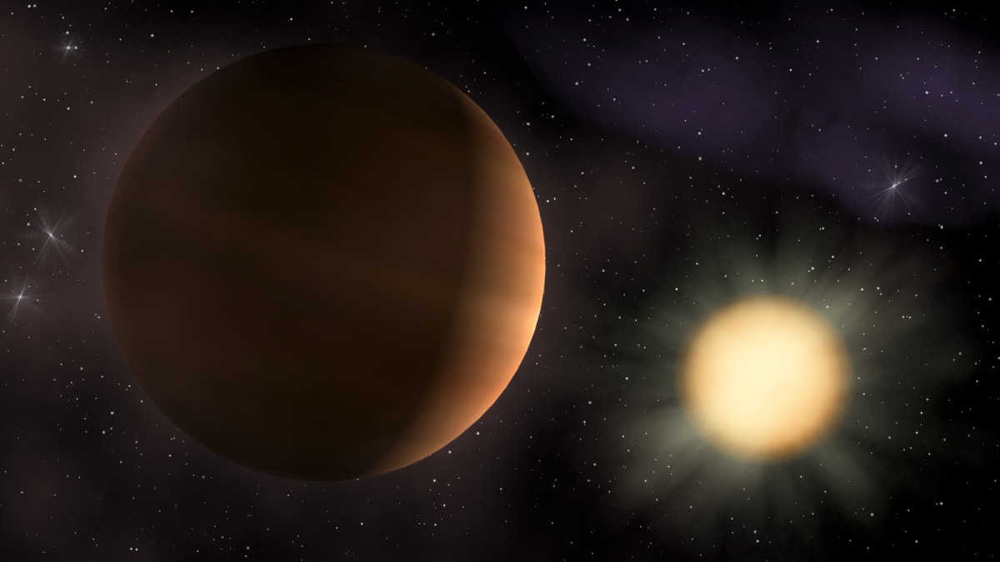
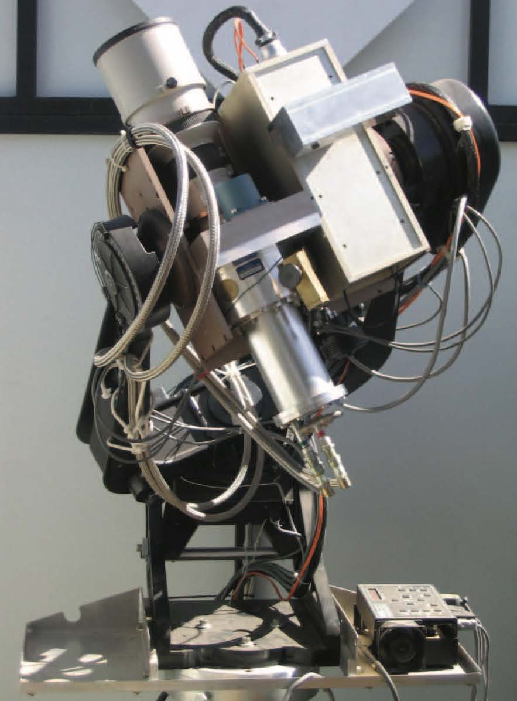
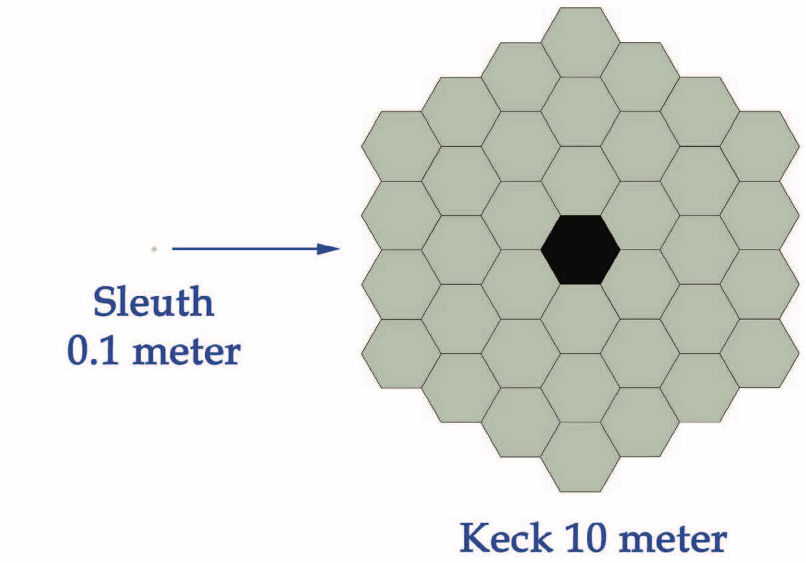

Minnow Telescope Finds Massive Planet
This article was originally published in the Astronomy Ireland Magazine (March 2007).
Since ancient times, mankind has studied the sky and wondered what those “wandering stars” (the solar system planets) might be. Centuries of observations of these celestial bodies led to the realization that Earth was not the center of the universe and the development of Newton’s Theory of Gravity. At the end of the last century, having run out of new planets to study, astronomers began to look beyond the reach of our own Sun, and search for planets in orbit around distant stars. In the decade since, we have found over two hundred planets1 outside our solar system, and continue to examine nearby stars for evidence of planetary companions.

Figure 1: A computer-generated simulation of TrES-2 crossing (transiting) the disk of its host star. TrES-2 transits farther from the disk center than any other known transiting planet. The transit of TrES-2 causes a drop in the brightness of its home star of about one and a half percent. This slight dimming of the star’s light was noticed and measured by the TrES researchers, who used the parameters of the transit to determine the planet’s mass, size and other properties. Credit: Jeffrey Hall (Lowell Observatory)
In this age of billion-dollar telescopes that dwarf houses, it would be reasonable to assume that each of these discoveries was made using the latest and greatest technology. However, one of the most recently discovered “exoplanets” was identified using a trio of amateur telescopes. The humble telescopes used in the discovery were built using off-the-shelf 10-cm camera lenses. The three telescopes shown in Figure 1 – Sleuth, the Planet Search Survey Telescope and the STellar Astrophysics and Research on Exoplanets (STARE) telescope – form a network called the Trans-atlantic Exoplanet Survey (TrES). Our TrES team has so far2 identified two planets, imaginatively called TrES-1 and TrES-2. They are transiting exoplanets, so called because they “transit” or pass in front of their stars (see Figure 2). When a planet transits a star, it blocks a small fraction of the starlight, and the star appears to dim. This is similar to what we saw during the recent transit of the Sun by the planet Mercury. For distant stars, though, we cannot take an image of the star’s disk, so instead we measure the amount of light coming from it using a digital camera. Although 2001 exoplanets are known, transiting exoplanets are rarer, with only 143 known today. These two planets can also be classified as “hot Jupiters”. They are similar in mass and size to Jupiter, and yet they are closer to their stars than Mercury is to our Sun! The proximity of the star means that such a planet experiences intense radiation from the star, making the planet hotter than a more-isolated planet like Jupiter. These precious transiting hot Jupiters are the only planets outside of our solar system for which we can precisely measure the size and mass of the planet. Before the discovery of the transiting planets, we only had the four gas giants within our solar system (Jupiter, Saturn, Uranus and Neptune) with which to study how these giant planets form and evolve. This meant that our understanding was limited.
We determine the radius of a transiting planet from the amount of starlight that it blocks. A larger planet would block a larger fraction of light, and the star would appear to dim to a greater extent. We can determine the mass of the planet by measuring the effect the mass of the planet has on the star. The Sun attracts Jupiter and hence causes Jupiter to circle around it in a 12 year orbit. However, Jupiter also attracts the Sun, and causes the Sun to circle, albeit in a much smaller orbit. A distant observer outside the solar system could deduce the presence of Jupiter by observing this “wobble” of the Sun. In a similar way, we can measure the mass of a transiting planet by observing the movement of its host star. Note that in neither case do we directly detect the planet, only the effect the planet has on the star, either by blocking its light or causing it to move in a small circular orbit.
 |  |  |
Figure 2: The 10-cm telescopes used to identify the transiting planet TrES-2. Together these telescopes form the Trans-altlantic Exoplanet Survey network, and search the night sky for evidence of planets orbiting around distant stars. The PSST is located at Lowell Observatory, home to another planet hunter, Clyde Tombaugh, discoverer of (the then planet) Pluto in 1930. Credit: The Trans-atlantic Exoplanet Survey (TrES) team.
Although TrES-2 was first identified using a 10-cm telescope, we could not be certain that the transit dip that we saw was caused by a planet. It was possible that we were instead seeing an eclipsing binary system, where two stars are in orbit around each other and take turns passing across the disk of their companion. In order to measure the mass of the transiting companion in our candidate planetary system, and thereby determine whether it was a planet or a star, we had to scale up our equipment. We observed our target star with one of the 10-m telescopes at the W.M. Keck Observatory on the summit of Mauna Kea, Hawaii (see Figure 3). We measured the wobble of this star, and concluded that the companion was a Jupiter-mass planet. The past few months have truly been an exciting time for astronomers looking for new exoplanets. TrES-2 is the most massive of the nearby transiting planets and sets a new constraint for our models of how these gas giants form around stars. TrES-2, announcd in September, was also the first of four new planets to be presented within a few weeks. Three of these planets have posed theorists a new challenge. Prior to the discovery of the planets TrES-2, HAT-P-1b, and WASP-1b, there was only one transiting planet that these theorists were puzzled by. Using models based on the solar system gas giants, and including the effect of the heat from the nearby star, they were able to explain how the mass of a hot Jupiter should relate to its radius. And their models correctly predicted the observed planetary radii, except for one transiting planet, HD 209458b. With one oddball, it’s easy to dismiss it as a rare case. However, TrES-2, HAT-P-1b and WASP- 1b are all larger than we would expect. Now we have to go back to the drawing board and try to figure out why these planets are so puffed up.

Figure 3: An illustration of the different light-collecting areas of the 10-cm Sleuth telescope that first identified TrES-2 and the 10-m Keck telescope used to measure the Jovian mass of the planet. Credit: Scott Kardel (California Institute of Technology)
The planet TrES-2 is also noteworthy for being the first transiting planet in an area of the sky known as the “Kepler field”, which has been singled out as the target field of view for the upcoming NASA Kepler mission. Using a satellite-based telescope, Kepler will stare at this patch of sky for four years, and should discover hundreds of giant planets and even Earth-like planets. Finding a planet in the Kepler field allows astronomers to plan future observations with Kepler that include searching for moons around TrES-2.
The TrES network of telescopes is illustrative of the new age of astronomy when novel ideas and new technologies are changing the way we study the night sky. Telescopes are located high up on mountain tops, where they can try to avoid low-lying clouds and some atmospheric effects. Despite the location in warm areas such as California or Hawaii, observing in an open dome on a mountain top used to be a chilling experience, requiring passion, discipline and lots of coffee. Thankfully, the frostbitten fingertips of graduate students need no longer be sacrificed on the altar of science. With the development of computer controlled telescopes, observers are able to stay warm in climate-controlled rooms. In fact, long-distance observing is now a reality. The Keck telescopes require only a technician be present in the dome of the telescopes. The scientists can control the instrumentation on the telescopes from a sea-level control room near Mauna Kea, or even from Caltech in California! In the case of the TrES telescopes, all the required actions are scripted in advance, and computer runs this script during the night. In the morning, the observations are transferred over the internet to the observer’s home computer.
The three telescopes also act as backups for each other during periods of bad weather. For example, the PSST at Lowell Observatory in Arizona experiences a monsoon every summer, during which very little observing is possible. Since the summer nights at Palomar Observatory in California are generally clear, the Sleuth telescope can observe the target field while the PSST is weather-logged. The telescopes can also work in shifts, taking turns to observe the night sky as the sun rotates around the other side of the Earth. STARE in the Canaries begins observing first each night, whereas Sleuth can continue monitoring the night sky long after the sun has risen over STARE.
This discovery using telescopes placed in multiple locations required an international team of astronomers, from various institutions like Caltech, Harvard University, the Canary Islands Institute of Astronomy, and the Lowell Observatory (fittingly, as the institute where Clyde Tombaugh discovered Pluto in 1930). It also required countless man-hours be poured into taking these cheap telescopes and turning them into useful and automated scientific tools. The payback from all this hard work and cooperation in the ability to sleep peacefully, knowing each night that these humble and tireless workhorses are scanning the heavens for new exoplanets.
Francis T. O Donovan is a final-year PhD graduate student at the California Institute of Technology near Los Angeles. He received a BSc and MSc from University College Cork, and tells everyone who will listen that TrES-2 is The First Irish Planet. His PhD thesis is based on the search for extrasolar planets, and he previously worked on X-ray Binaries.
1 3443 exoplanets are known as of 2016-06-30. ↩
2 TrES-3, TrES-4, and TrES-5, have since been discovered. ↩
3 2628 transiting exoplanets are known as of 2016-06-30. ↩
Leave a Comment